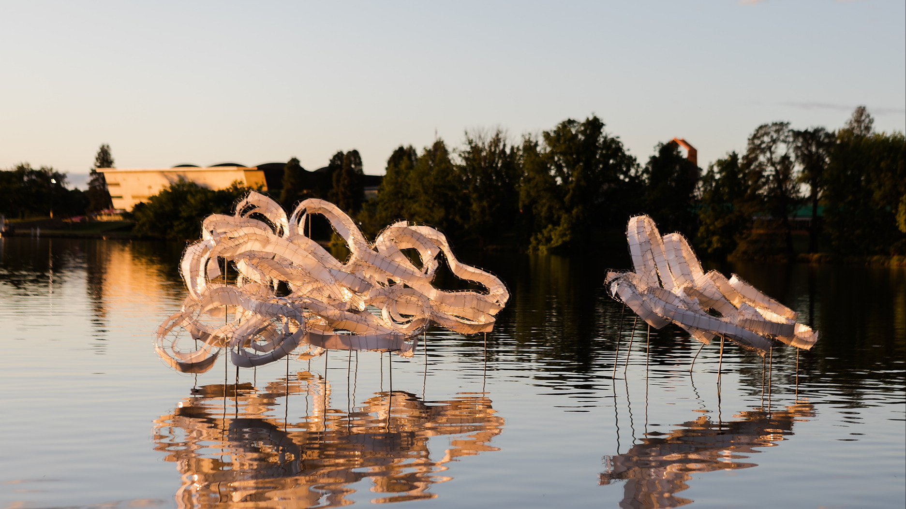
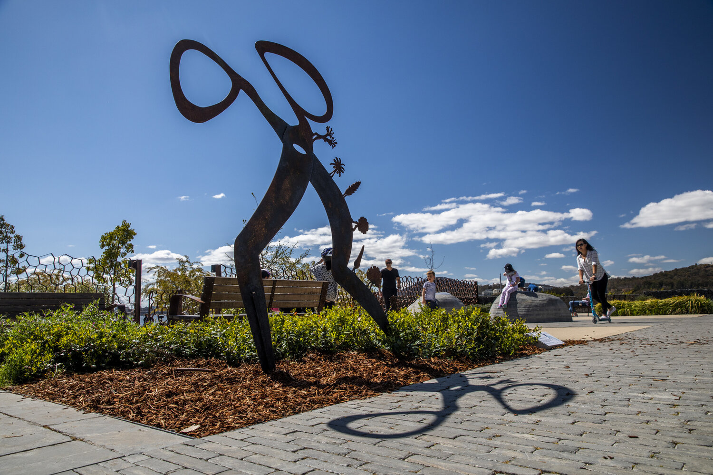
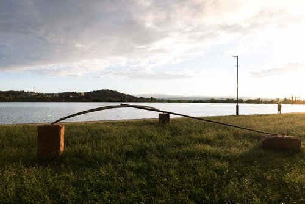
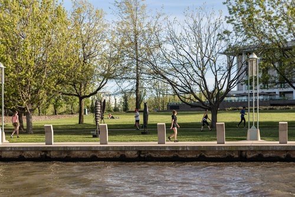
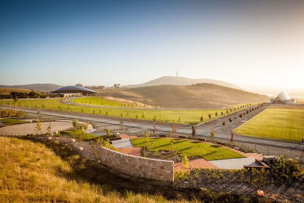
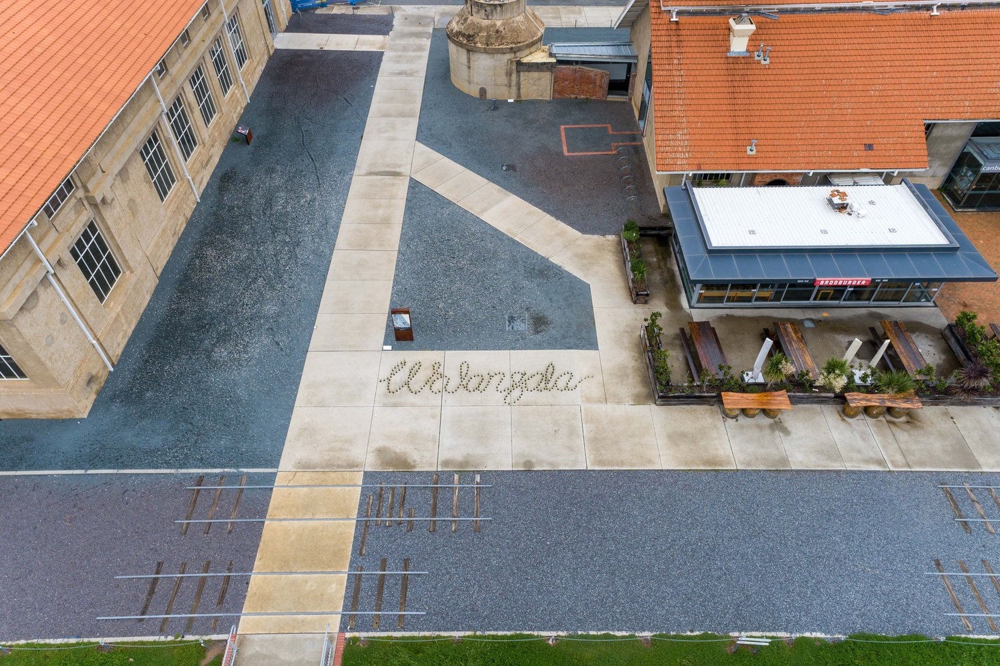

Canberra Art Biennial
The Art Biennial in Canberra consists of core works surrounding the central lake environment (contour 556), as well as a larger presence in Canberra City/City Hill. We'll be back in the Kingston Arts District in 2020, with satellite exhibitions at Thor's Mixing Room Gallery and Barton Art Box.
 NOW JOIN THE Canberra Art Festivals
The festival takes on the name Canberra Art Biennial in 2022 and expands to the National Arboretum (contour 656) and University of Canberra (contour 606) as well as maintaining and developing our presence north and south of Canberra, centred on contour 556, the height above sea level of Lake Burley Griffin.
   